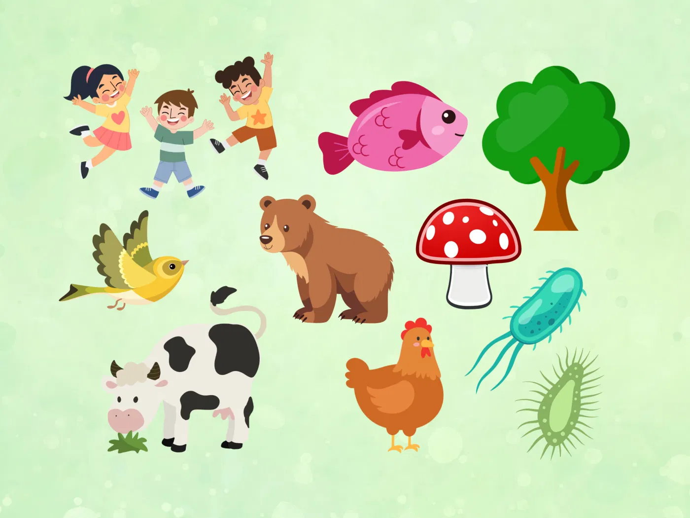

Los ecosistemas están formados por una gran diversidad de organismos que interactúan entre sí y con su entorno. Cada ser vivo cumple una función específica dentro de este sistema natural, lo que permite mantener el equilibrio ecológico y el funcionamiento adecuado de la biosfera.
Productores: la base de la vida en los ecosistemas
Los productores, también llamados organismos autótrofos, son aquellos capaces de producir su propio alimento a partir de sustancias inorgánicas. Para ello utilizan procesos como la fotosíntesis o la quimiosíntesis.
Su función principal es transformar la energía del ambiente en energía química que puede ser utilizada por otros organismos. Entre los principales productores se encuentran plantas, algas y cianobacterias.
Productores Fotosintéticos
Utilizan la luz solar para llevar a cabo la fotosíntesis. Este grupo incluye plantas, algas y algunas bacterias que contienen clorofila.
Productores Quimiosintéticos
Obtienen energía a partir de reacciones químicas de sustancias inorgánicas. Se encuentran en ambientes extremos como las profundidades oceánicas.
Consumidores: organismos que obtienen energía de otros seres vivos
Los consumidores, también llamados heterótrofos, son organismos que no pueden producir su propio alimento, por lo que deben obtener energía alimentándose de otros seres vivos.
Niveles de Consumidores:
Descomponedores y detritívoros: recicladores de la naturaleza
Los detritívoros son animales que se alimentan de materia orgánica en descomposición, como lombrices, cochinillas y milpiés. Los descomponedores, generalmente bacterias y hongos, descomponen químicamente esta materia transformándola en nutrientes inorgánicos.
Nicho ecológico
El nicho ecológico se refiere al conjunto de condiciones, funciones y relaciones que definen el papel de una especie dentro de un ecosistema. Este concepto incluye la forma en que una especie obtiene su alimento, su comportamiento, el tipo de hábitat donde vive y sus interacciones con otras especies.
Interacciones ecológicas entre organismos
Competencia
Cuando dos organismos compiten por recursos limitados
Depredación
Un organismo captura y consume a otro
Parasitismo
Un organismo se beneficia a expensas de otro
Mutualismo
Ambas especies obtienen beneficios
El equilibrio ecológico y nuestro papel
La biodiversidad es un elemento clave para la estabilidad y la resiliencia de los ecosistemas.